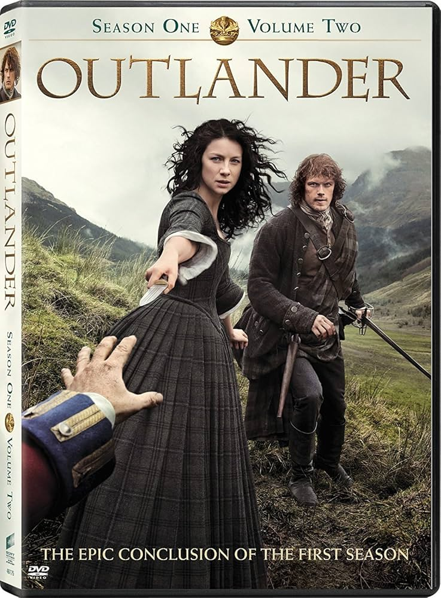

My First Webpage
Movies
Interstellar

Interstellar is a 2014 epic science fiction film directed, co-written, and produced by Christopher Nolan.[1] It stars Matthew McConaughey, and Anne Hatheway.[2]
"We shall meet again Lily "
It follows a group of astronauts who travel through a wormhole near Saturn in search of a new home for humanity.[3][4] Known for its scientific accuracy in depicting black holes and relativity, Interstellar received critical acclaim for direction.[4][5]
Shows - Fantasy
The Witcher
⠀⠀⠀⠀⠀⠀⠀⠀⠀⠀⠀⠀⠀⠀⠀⣼⣿⡄⠀⠀⠀⠀⠀⠀⠀⠀⠀⠀⠀⠀⠀⠀⠀⠀⠀⠀⠀⠀⠀
⠀⠀⠀⠀⠀⠀⣴⠚⡄⢫⠉⢩⠃⠀⣰⣿⣿⡇⠀⠀⠀⠀⠀⠀⠀⠀⠀⠀⠀⢀⣤⡄⠀⠀⠀⠀⠀⠀⠀
⠀⠀⠀⠠⡞⠳⡜⠦⠚⠘⠒⠋⠀⢰⣿⣿⣿⡇⠀⠀⠀⠀⠀⠀⠀⠀⠀⠀⣰⣿⣿⡇⠀⠀⠀⠀⠀⠀⠀
⠀⠀⠀⠀⠈⠚⠁⠀⠀⠀⠀⠀⢠⣿⣿⣿⣿⣧⠀⠀⠀⠀⠀⠀⠀⠀⢠⣾⣿⣿⣿⠁⠀⠀⠀⠀⠀⠀⠀
⠀⠀⠀⠀⠀⠀⠀⠀⠀⠀⠀⠀⣼⣿⣿⣿⣿⣿⠀⠀⠀⠀⠀⠀⠀⣰⣿⣿⣿⣿⣿⠀⠀⠀⠀⠀⠀⠀⠀
⠀⠀⠀⠀⠀⠀⠀⠀⠀⠀⠀⢰⣿⣿⣿⣿⣿⣿⠀⠀⠀⠀⠀⢀⣾⣿⣿⣿⣿⣿⡇⠀⠀⠀⠀⠀⠀⠀⠀
⠀⠀⠀⠀⠀⠀⠀⠀⠀⠀⢀⣿⣿⣿⣿⣿⣿⣿⣤⣄⣀⡀⣠⣿⣿⣿⣿⣿⣿⣿⠇⠀⠀⠀⠀⠀⠀⠀⠀
⠀⠀⠀⠀⠀⠀⠀⠀⢀⣼⣿⣿⣿⣿⣿⣿⣿⣿⣿⣿⣿⣿⣿⣿⣿⣿⣿⣿⣿⣿⠀⠀⠀⠀⢸⠉⠉⢰⠂
⠀⠀⠀⠀⠀⠀⠀⠀⣾⣿⣿⠟⠛⠙⠻⣿⣿⣿⣿⣿⣿⣿⣿⣿⣿⣿⣿⣿⣿⡏⠀⠀⠀⠀⡇⠀⡰⠃⠀
⠀⠀⠀⠀⠀⠀⠀⢰⣿⣿⠃⠀⠀⢰⡆⢻⣿⣿⣿⣿⣿⡿⠛⠛⠻⣿⣿⣿⣿⠀⠀⠀⠀⢰⠁⡰⠁⠀⠀
⠀⠀⠀⠀⣶⣦⣤⠘⣿⣿⣆⠀⠀⢿⠇⣼⣿⣿⣿⣿⠛⢸⡇⠀⠀⠙⣿⣿⣿⣇⠀⠀⠀⠈⠒⠁⠀⠀⠀
⠀⠀⠀⠀⢀⣀⣁⠀⠻⣿⣿⣷⣦⣤⣶⣿⣿⣿⣿⣇⡀⣾⠃⠀⠀⢠⣿⣿⣿⡇⠀⡔⠒⠲⡄⠀⠀⠀⠀
⠀⠀⠀⠘⠛⠋⠉⠀⠀⠈⠻⢿⣿⣿⣿⣿⣿⣿⣿⣿⣿⣶⣤⣤⣴⣾⣿⣿⠟⠀⠀⠱⠤⣀⠇⠀⠀⠀⠀
⠀⠀⠀⠀⠀⠀⠀⠀⠀⠀⠀⠀⠈⠛⠻⢿⣿⣿⣿⣿⣿⣿⣿⣿⣿⡿⠟⠁⢀⣤⣀⠀⠀⠀⠀⠀⠀⠀⠀
⠀⠀⠀⠀⠀⠀⠀⠀⠀⠀⠀⠀⠀⠀⠀⠀⠀⠈⠉⠉⠉⠉⠉⠉⠀⠀⣀⡀⠀⠉⠙⠓⠀⠀⠀⠀⠀⠀⠀
⠀⡗⡤⡲⠀⠀⠀⠀⠀⠀⠀⠀⠀⠀⠀⠀⠀⠀⠀⠀⠀⠀⠀⠀⠀⠀⠀⠀⠈⢻⠆⠀⠀⠀⠀⠀⠀⠀⠀⠀⠀
⣴⣫⢸⢷⣤⠀⠀⠀⠀⠀⠀⠀⠀⠀⠀⠀⠀⠀⠀⠀⠀⠀⠀⠀⠀⠀⠀⠀⠀⠀⠀⠀⠀⠀⠀⠀⠀
⠀⠈⠞⠀⠀⠀⠀⠀⠀⠀⠀⠀⠀⠀⠀⠀⠀⠀⠀⠀⠀⠀⠀⠀⠀⠀⠀⠀⠀⠀⠀⠀⠀⠀⠀⠀⠀⠀⠀⠀⠀⠀⠀⠀⠀⠀⠀⠀⠀⠀⠀⠀⠀⠀⠀⠀⠀⠀⠀⠀⠀⠀⠀⠀
The Witcher is a fantasy drama television series created by Lauren Schmidt Hissrich for Netflix, based on the book series of the same name by Polish author Andrzej Sapkowski.[1]
Starring Henry Cavill (Seasons 1–3) as Geralt of Rivia, the story follows a monster hunter navigating a world of magic, war, and destiny, intertwined with the lives of sorceress Yennefer and princess Ciri.[2][3]
The series gained popularity for its dark fantasy setting, storytelling, action, and faithful adaptation of Sapkowski’s lore.[4]
Outlander

Outlander is a historical fantasy drama television series based on the novel series by Diana Gabaldon.
Links
1Review of Interstellar: https://www.rottentomatoes.com/m/interstellar_2014
2Outlander (Netflix): https://www.netflix.com/in/title/70285581
Footnotes
a"Witcher" news is currently focused on the "House of the Dragon" prequel, with season 2 recently released...
b"Outlander" is inspired by the novel series by Diana Gabaldon, blending historical fiction, romance, and fantasy elements.
Kriti Kumari
1CR23CS091
B1 Batch